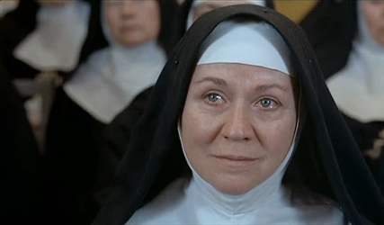
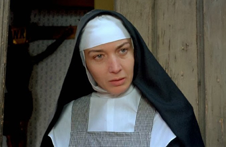
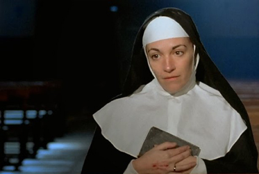
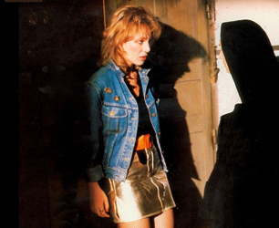
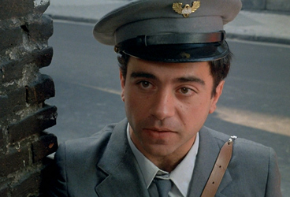
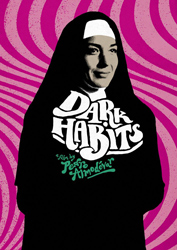
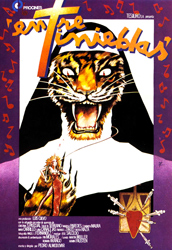
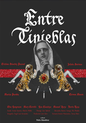

Julieta Serrano - Mother Superior
Marisa Paredes - Sister Manure


Carmen Maura - Sister Damned
Chus Lampreave - Sister Sewer Rat

Cecilia Roth - Mercedes, former lover of the Mother Superior
Agustin Almodóvar - Postman

Yolanda, a cabaret singer, brings heroin to her lover who drops dead of an overdose. To escape from the police, the singer looks for refuge in a local convent. The Mother Superior, a fan of Yolanda, rapturously greets her. The mission of the order, called the Humiliated Redeemers (Redentoras humilladas), is to offer shelter and redemption to fallen women. The convent once was a bustling haven for prostitutes, drug addicts and murderers, but it is now in disrepair. The order is facing serious financial hardships as their prime financial supporter, the vain and greedy Marchioness (La Marquesa) has decided to discontinue the convent's annuity under the pretense of economising. The convent had taken in their wayward daughter, Virginia, who subsequently became a nun and ran off to Africa, only to be eaten by cannibals.
Six religious members of the community live at the convent: the mother Superior, four other nuns and the chaplain. To reinforce their vows of humility, the Mother Superior has given the other nuns repulsive new names: Sister Manure, Sister Damned, Sister Snake and Sister Sewer Rat. With few opportunities for spiritual ministry, the nuns have begun to indulge in their own idiosyncratic pursuits in order to pass the time. The nurturing Sister Damned compulsively cleans the convent and coddles all the animals under her care, including an overgrown pet tiger that she treats like a son, playing the bongos for him. The ascetic Sister Manure is consumed by thoughts of penitence and corporal self-sacrifice and cooks between LSD hallucinations. She murdered somebody and as the mother superior lied under oath to save her from jail, she is very devoted to her. The over-curious Sister Sewer Rat gardens and secretly, under the pen name Concha Torres, writes lurid novels about the wayward souls who visit the convent. She smuggles the novels out of the convent through her sister's periodic visits. The unassuming Sister Snake, with the help of the priest, tailors seasonal fashion collections for dressing the statues of the Virgin Mary. Her piety is a cover up for her romantic love for the chain-smoking chaplain. The mother Superior is a heavy drug user and a lesbian, whose charitable work is a means of meeting needy young women. She admits, 'From admiring them so much I have become one of them.'
At the convent, Yolanda mingles with the nuns. The Mother Superior soon falls passionately in love with her. Together, they consume coke and heroin until Yolanda decides both should come off the drugs. Withdrawal for Yolanda is like a painful catharsis, but for the Mother Superior it confirms her very sinful nature. Yolanda keeps the Mother Superior at arm's length and strikes a friendship with Sister Rat.
The Mother Superior has to face both Yolanda's rejection and the threats of closure. She fails to blackmail the Marquise with a letter revealing information about Virginia. Undiscouraged, she then prepares to resort to drug trafficking to maintain the independence of her convent. In spite of these trials, the Sisters decide to celebrate the Mother Superior's birthday. The Marquise and nuns from other convents come to the party. During the celebrations, Yolanda, accompanied by the sisters, sings in honor of the Mother Superior. The Marquise manages to get a letter that coming from Africa has informed her about a long lost grandson that has been raised by the Apes. Because Yolanda and Sister Rat helped her to obtain the letter, she is very grateful to them. At the end of the party, the new Mother General, the highest authority in their order, announces the dissolution of the convent. Sister Damned decides to return to her native village and leaves her tiger to Sister Snake and the Priest. They are in love and want to start a family with the tiger as their son. Sister Rat and Yolanda go to live with the Marquise. Only Sister Manure is left to console the Mother Superior from the terrible heartbreak that Yolanda's desertion has caused.


